The SmartUI security system is user-centric and operates on top of the traditional Windows operating system security, using a configurable sub-set of the existing users and groups on each Server computer, known as the "allowed" users and groups.
This process requires the following steps:
For the purposes of this example only two users are required to be allowed to log into this SmartUI Server, namely the Operator (which should belong to the group “Users”) and the Administrator (which should belong to the group “Administrators”).
IMPORTANT: The screenshots and specified configuration settings relate to an OLD version of the VIP product and use Windows XP - so your specific settings and screens may differ.
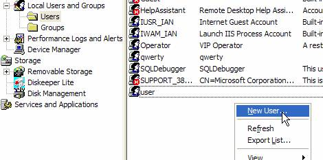
Figure 1 : How to add a new user account
Note: Since all users created in this manner are assigned to the Users group on the computer, by default, the Operator user has been appropriately configured.
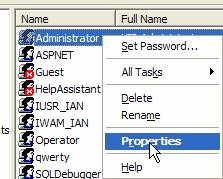
Figure 2 : Displaying the Properties dialog for this user
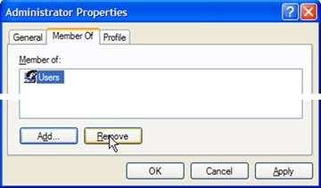
Figure 3 : Removing the Users group assigned to this user by default
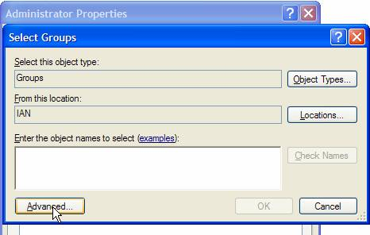
Figure 4 : Opening the advanced pane of this dialog
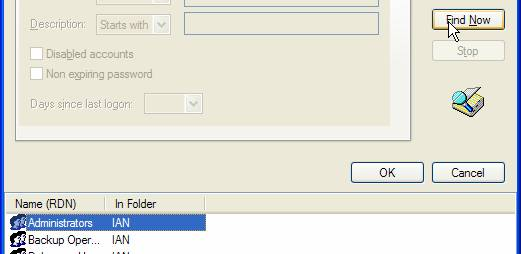
Figure 5 : Selecting the required group for this user
Having created the necessary user accounts on the SmartUI Server computer, it is now necessary to add them to the list of allowed users for this SmartUI Server, so that they are able to log into the Server and therefore use the SmartUI Designer or SmartUI Operator.
The Administrator user is usually assigned global access to the SmartUI Server as this user will administer the SmartUI Server and its security and thereby manage the other users that will access this Server.
Assign global access privileges to the Administrator user as follows:
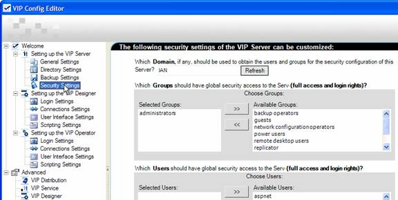
Figure 6 : Displaying the security settings for the SmartUI Server
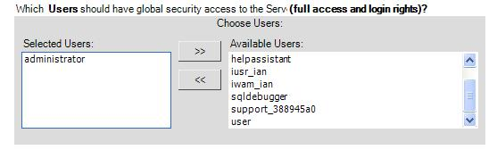
Figure 7 : Assigning global access privileges to the Administrator user
It is not recommended to provide the Operator user with global access since this user should typically only be allowed access to certain projects and datasources etc. (not all).
Although it is recommended to ensure that the group to which the Operator belongs is able to initially perform all services provided by this SmartUI Server. As this saves configuration time, since instead of adding this user to all the services it needs to be part of, it is ONLY necessary to remove this user from those that the user should not be part of.
This is configured via the following setting on this Security Settings page.
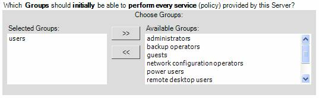
Figure 8 : Time-saving setting for the Operator user group
However, in this case, nothing needs to be done since the Users group is automatically added by default.
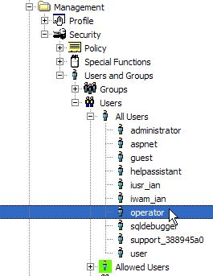
Figure 9 : Locating the Operator user in the Enterprise Manager window
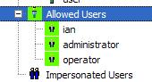
Figure 10 : Operator user is added to the Allowed users for this SmartUI Server
Therefore, the Administrator user is able to log onto and access EVERY datasource and policy provided by this SmartUI Server, by default. Likewise, the Operator user is also able to log onto the SmartUI Server, but can ONLY access the datasources that this user has been explicitly granted access to.
For instance, let us assume that a certain project called Common Project is required to be accessed by both the Administrator and the Operator users. This can be configured as follows:
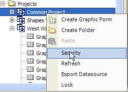
Figure 11 : Displaying the Security configuration dialog for this datasource
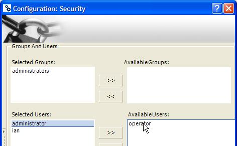
Figure 12 : Selecting the Operator user in the Security configuration dialog
Note1: Although a project was used in this example, this procedure can be used for any datasource that has been added.
Note2: There are other options that can be configured in this dialog, but they and the other aspects of user security are beyond the scope of this how to document, please consult the help file for more information.